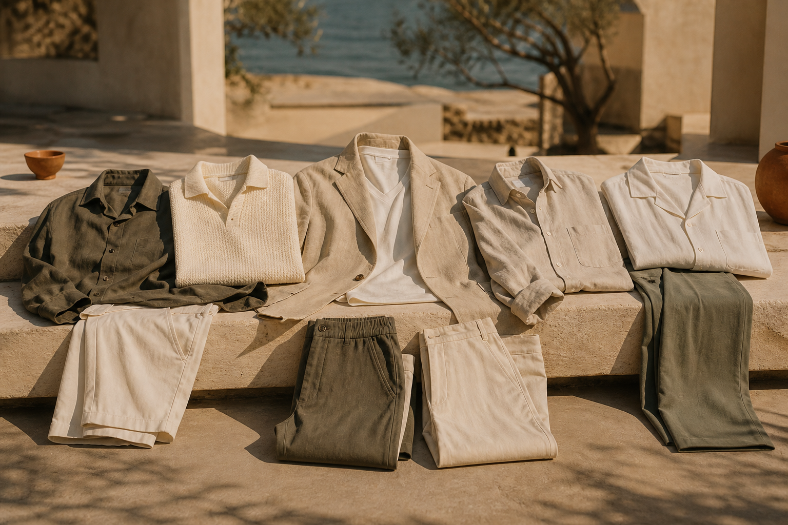
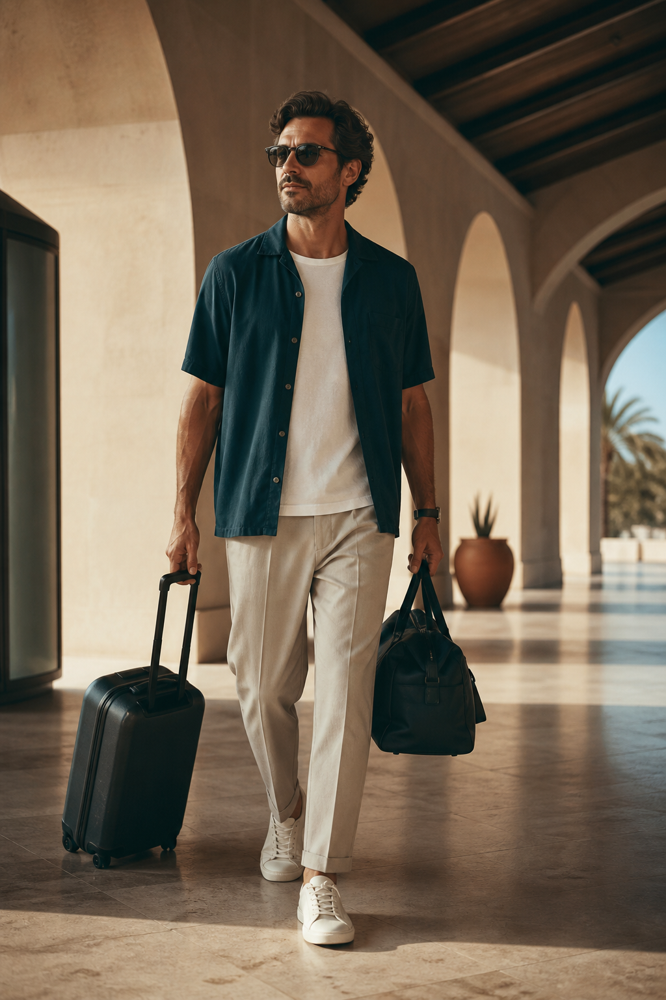
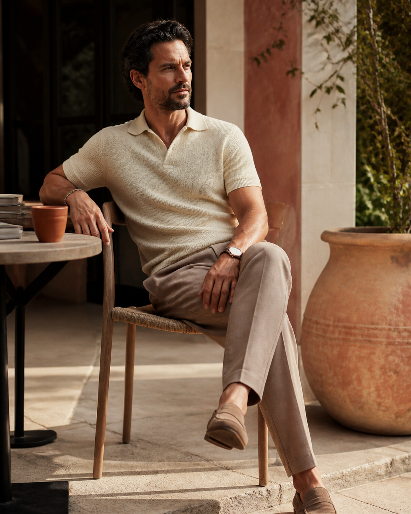
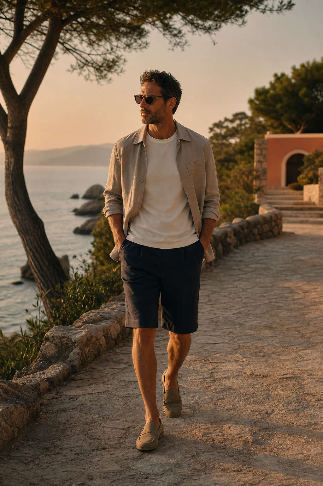
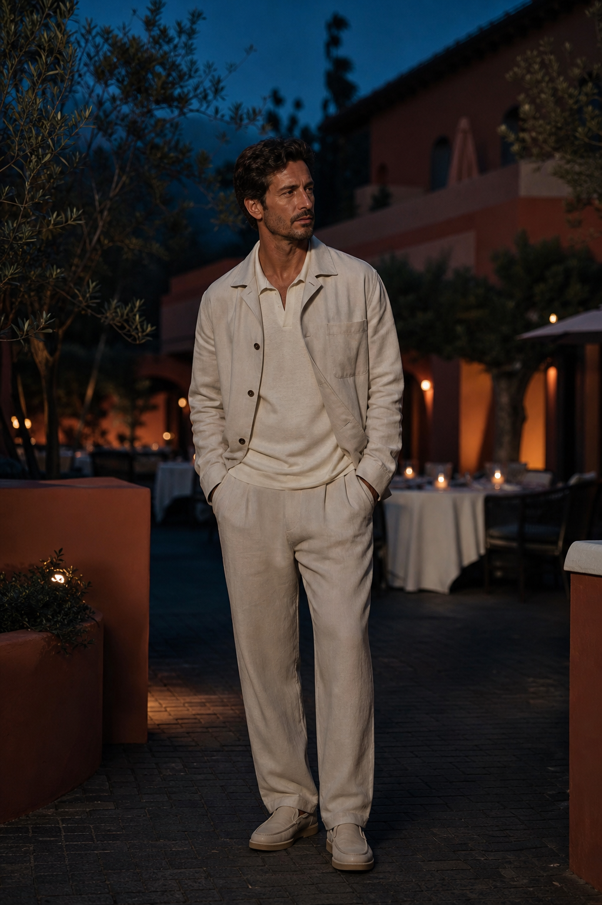
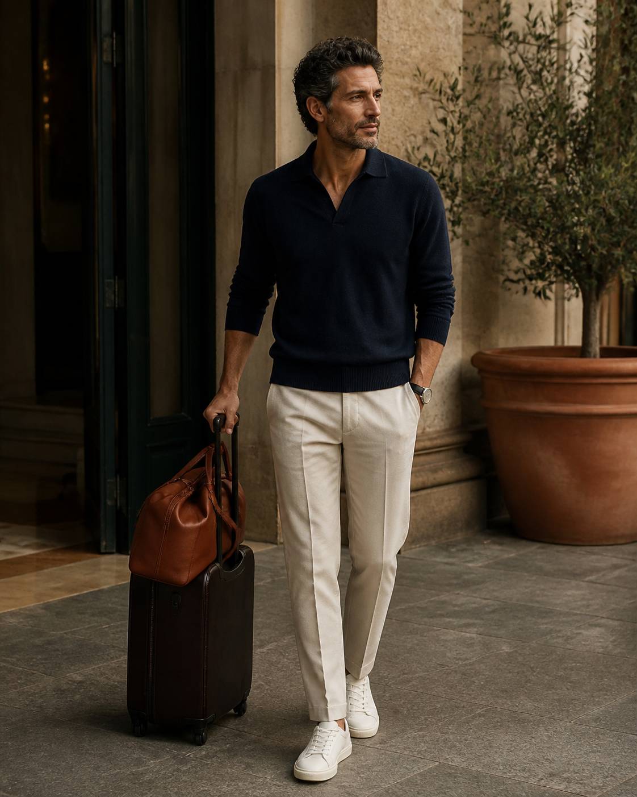

MAGMA EDITORIAL / SUMMER 2026
옷은 더 적게. 장면은 충분하게.

01 / 출발·장거리 이동
오픈칼라 셔츠 · 이지 테이퍼드 팬츠

02 / 늦은 아침·로컬 카페
니트 폴로 · 스트레이트 팬츠

03 / 해 질 무렵 산책
가벼운 오버셔츠 · 롱 쇼츠

04 / 예약한 저녁 식사
가벼운 셋업 · 간결한 이너

05 / 귀가·도시 복귀
롱슬리브 셔츠 · 단정한 팬츠
FIVE LOOKS / ONE JOURNEY
다섯 벌이 아니라, 장면마다 역할을 바꾸는 몇 가지 기본.